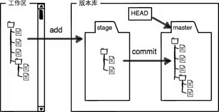

自己的本地仓库和远程仓库之间的基本操作
创建
- `git init` 在当前文件夹下创建一个本地仓库,这个仓库的工作区即这个文件夹和子文件
- `git add *` 将工作区的文件添加到暂存区
- `git commit -m"修改信息"`
- `git status` 仓库当前状态

远程仓库连接
- `git remote add origin url` 关联远程仓库。这里面的origin是后面urld的别名,而url是远程库地址
- `git remote -v` 查看远程库信息
- `git push -u origin master` 第一次推送master分支所有内容,并把本地的master分支和远程的master分支关联起来。
- `git push origin master`
- `git remote rm origin` 删除关联的(origin)远程仓库
查看
- `git remote -v` 查看远程库信息
- `git diff` 查看修改
- `git log` 显示从最近到最开始commit日志
删除、丢弃和恢复
- `git checkout --file` 丢弃工作区的修改
- `git reset HEAD ` 把暂存区的修改撤销掉。
克隆别人的远程仓库操作
克隆
- 在GitHub上fork目标项目,GitHub上会有一个副本库。
- 在本地创建一个要克隆项目的文件夹,`git clone url`,其中url是自己的副本库地址
- `git branch` 查看分支
- `git branch name` 创建分支
- `git checkout name` 切换到名为name的分支上
- `git checkout -b name `创建名为name的分支并且切换到name分支
- `git merge` 合并当前分支到主分支
- `git branch -d name` 删除名为name的分支
- git push origin master`
冲突的操作
- `git status` 查看合并冲突文件
- 手动修改文件,解决冲突
- 再次提交
- `git log --graph` 查看分支合并情况
bug修复
- `git stash` 储存当前分支现场
- `git stash list` 查看储存修改列表
- `git stash apply` 恢复指定的列表的某个
- `git stash drop` 删除指定的列表的某个
- `git stash pop` 恢复现场并且删除储存
- `git cherry-pick commit` 在主分支上修改的bug,合并到当前分支上,commit是标识符
多人协作
- `git remote -v`
- `git push origin master`
- `git push origin branch-name` branch-name是本地要推给远程的分支名
- `git checkout -b branch-name origin/branch-name` 在本地创建远程的某分支
- `git pull` 从远程最新版本抓取分支
- `git branch -set-upstream branch-name origin/branch-name` 建立本地分支和远程分支的关联